Deploying to production Things are getting serious¶
This section is a tutorial on how to deploy the system in production mode. The previous section was about running it locally and we strongly recommend that you go through the process before you start with this one because they have a lot in common.
In fact, we will not go over some details that we covered in that section, so please, go through it if you haven't done so yet.
Prerequisites¶
- A linux server - preferably Ubuntu - with SSH access. We use DigitalOcean.
- Install nvm: Follow this link for instructions.
- Install latest LTS version of Node and npm:
nvm install --lts - Install Yarn:
npm i -g yarn - Install MySQL: Follow this link for Ubuntu 16.04 Or find the right turorial for your version of Ubuntu.
- Install react-scripts (To be able to build the client):
yarn global add react-scripts - Fork the project repo through Github: Follow this link for instructions.
- Nginx (Reverse Proxy):
sudo apt install nginx - Pm2 (Robust Process Manager):
yarn global add pm2 - Clone your new Git repo to your server:
git clone https://github.com/YOUR-USERNAME/sema-core.git- Make sure to change YOUR-USERNAME to your Github username. - Move into your new folder:
cd sema-core - From this point on, we expect that you are in the root directory of the project.
Deploying¶
Assuming you have a Linux server ready and you've installed all the necessary prerequisites correctly, let's get started.
Server Setup¶
The SSH server is ready but it's not setup yet, let's get this taken care of.
1. Creating a Sudo User¶
Follow those steps to create a new sudo user so you don't have to login as root:
- Login to the server as the root user:
1 | ssh root@SERVER_IP_ADDRESS |
Replace SERVER_IP_ADDRESS with the IP address of your SSH server
- Use the
addusercommand to add a new user to your system.
1 | adduser username |
- Be sure to replace
usernamewith the user that you want to create. - Set and confirm the new user's password at the prompt. A strong password is highly recommended!
- Follow the prompts to set the new user's information. It is fine to accept the defaults to leave all of this information blank.
- Use the
usermodcommand to add the user to the sudo group.
1 | usermod -aG sudo username |
By default, on Ubuntu, members of the sudo group have sudo privileges.
-
Test sudo access on new user account
-
Use the
sucommand to switch to the new user account.su - username -
As the new user, verify that you can use sudo by prepending "sudo" to the command that you want to run with superuser privileges.
sudo command_to_run -
For example, you can list the contents of the /root directory, which is normally only accessible to the root user.
sudo ls -la /root -
The first time you use sudo in a session, you will be prompted for the password of the user account. Enter the password to proceed.
If your user is in the proper group and you entered the password correctly, the command that you issued with sudo should run with root privileges.
-
-
Logout of the sudo user account
exit -
Logout of the root account
exit -
From now on, only login through the sudo account you just created, it is not safe to access and deploy a project on an SSH server using root.
ssh username@SERVER_IP_ADDRESS
2. Generating and Linking an SSH Key to Your Github Account¶
This one is an optional step. Linking an SSH key to your Github account will save you time when pulling from Github. It won't ask you for a password anymore.
Warning
Notice our use of pulling here and not pushing too. We strongly discourage you to make changes to the codebase from a production server.
If you're going to make changes that you want to save to your repo, make them on a development machine, push them to your repo and pull them from the production one.
This will also make your connection with Github even more secure.
Github already has some great documentation for those:
- Generating a new SSH key: Github Docs
- Adding/Linking an SSH key to your Github account: Github docs
MySQL Setup¶
While installing MySQL, you should have received a prompt to enter a password for the root MySQL user. You will need it for subsequent root connections.
With MySQL installed, let's start by running the mysql_secure_installation script that comes with MySQL:
1 | mysql_secure_installation |
This will show you some best practices for installing MySQL on a production server. It's up to you to activate/deactivate some options as suggested.
Whatever you do here won't affect our deployment.
Creating a new user and granting permissions¶
- Connect to the MySQL server as root:
1 | mysql -uroot -p |
- Create the new user
1 | CREATE USER 'USERNAME'@'%' IDENTIFIED BY 'PASSWORD'; |
Make sure to replace USERNAME and PASSWORD with your own values
- Grant privileges to the new user
1 | GRANT ALL PRIVILEGES ON *.* TO 'USERNAME'@'%'; |
The asterisks in this command refer to the database and table (respectively) that they can access. This specific command allows to the user to read, edit, execute and perform all tasks across all the databases and tables.
In this example we are granting newuser full root access to everything in our database. While this is helpful for explaining some MySQL concepts, it may be impractical for most use cases and could put your database’s security at high risk.
- Once you have finalized the permissions that you want to set up for your new users, always be sure to reload all the privileges.
1 | FLUSH PRIVILEGES; |
- Logout of the root user connection.
1 | exit |
- Login as the new user.
1 | mysqk -uUSERNAME -p |
Configurations¶
Let's now setup the configuration file, follow the instructions in this sub-section.
Building the dashboard client¶
Let's keep going by creating an optimized production build of the dashboard client:
- Move into the
report_clientdirectory:cd report_client - Install client dependencies:
yarn - Build the client:
yarn build
If you get a fatal error about not having enough memory while building the client, just add this - GENERATE_SOURCEMAP=false - to the .env file of the report_client directory and then run yarn build again:
echo 'GENERATE_SOURCEMAP=false' >> .env && yarn build
- Create a new
public_reactfolder into thereport_serverdirectory:
1 | mkdir ../report_server/public_react |
- Copy the entire build folder from
report_client/buildto thereport_server/public_reactfolder:
1 | cp -rf ./build ../report_server/public_react |
Serving the API and the dashboard client¶
Now that we have the dashboard client ready to be served, let's:
- Switch to the
report_serverdirectory:cd ../report_server - Assuming you've configured your
.envfile correctly, install server dependencies:yarn - Start the server with PM2:
pm2 start bin/www --name sema-server.
Name it however you want so you can easily refer to it later.
- Get your server IP address.
1 | curl icanhazip.com |
- Test the server access via curl - Since we haven't configured Nginx yet, we'll test it from port 3001.
1 | curl http://YOUR_SERVER_IP_ADDRESS:3001/untapped/health-check |
Replace YOUR_SERVER_IP_ADDRESS with your SSH server IP address.
This should return something like {"server":"Ok","database":"Ok"}
-
Setup Ngninx using this tutorial
-
Configure Nginx by editing - WITH SUPER USER - /etc/nginx/sites-available/default.
1 | sudo vim /etc/nginx/sites-available/default |
- Within the server block, there is an existing
location /block. Replace the contents of that block with the following configuration.
1 2 3 4 5 6 7 8 | location / { proxy_pass http://localhost:3001; proxy_http_version 1.1; proxy_set_header Upgrade $http_upgrade; proxy_set_header Connection 'upgrade'; proxy_set_header Host $host; proxy_cache_bypass $http_upgrade; } |
- Make sure you didn't introduce any syntax errors:
sudo nginx -t - Restart Nginx:
sudo systemctl restart nginx - Test the server access without using the port:
1 | curl http://YOUR-SERVER-IP-ADDRESS/untapped/health-check |
This should return something like {"server":"Ok","database":"Ok"}.
You can now setup DNS zone records for your server.
Building the POS APK¶
We will now build a customized version of the POS app.
For this part, do not do it on the SSH server. Do it locally on your development machine.
Customizing¶
Customizing the POS app for your SWE is a breeze. Let's get to it.
Setting up¶
- Follow the Android setup steps at the official react native docs. Make sure you select the appropriate tabs in the instructions.
- "Building Projects with Native Code"
- "Development OS: macOS or Windows or Linux.
- Target OS: Android"
Renaming the POS app¶
To rename the POS app, simply use our rename yarn/npm script.
1 | yarn rename APPNAME "ON-SCREEN APP NAME" |
The rename script takes two arguments, APPNAME and ON-SCREEN APP NAME.
APPNAME is the internal name the Android application will use for the app.
ON-SCREEN APP NAME is the name the user will see on the screen once the app is installed on the device. Notice it's between quotes while APPNAME is not, the on-screen name can have spaces while the internal name cannot. i.e.:
yarn rename JIBUPOS "SEMA Jibu"
Rebranding the POS app¶
Rebranding involves changing the logos on the POS app, the on-screen app logo and the background of the login screen.
At the time of writing, here's what the current logo looks like: 
There's a white text on the logo, try to drag it around to notice it.
and here's what the background of the login screen looks like:
Follow those steps to change those images to your liking:
- For the login screen background image, it must be a
jpgfile, simply replace the file located atmobile_client/src/images/swe-login.jpgwith your own image. A good base size for this image would be a width of 758 and a height of 563 - 758 x 563.
Make sure you name your new image to swe-login.jpg or it will not show up on the POS app once it's built.
Info
It your image is a png file, you can simply rename it to a jpg file, it will still work.
- For the logo and on-screen app image, it must be a
pngfile. Rename your new logo toic_launcher.png - Go to the NativeScrip Image Builder website
- In the
Upload an Imagesection, selectStatic Image - Android - Browse for your
ic_launcher.pngfile - Press
Upload App Image
It will download the app images to your computer as a zip file.
- After extracting the
zipfile, rename the folders nameddrawable-hdpi,drawable-mdpi,drawable-xhdpianddrawable-xxhdpitomipmap-hdpi,mipmap-mdpi,mipmap-xhdpiandmipmap-xxhdpirespectively. - Select and copy the 4 new folders you just renamed and paste them in the directory located at
mobile_client/android/app/src/main/res. Replace the ones that were already there.
Your app is now ready to be built.
Building¶
To build the POS apk file simply use the build_sema_apk.sh script in the mobile_client directory.
1 | sh build_sema_apk.sh |
Here's an example usage of this script:
1 2 3 4 5 6 7 8 9 10 11 12 13 14 15 16 17 18 19 20 21 22 23 24 25 26 27 28 | Generating the signing key
Password: // I enter my sudo user password
Enter keystore password: // I enter a new password for the keystore that's going to be generated
Re-enter new password: // I re-enter the same password for confirmation
What is your first and last name?
[Unknown]: Nick Rameau
What is the name of your organizational unit?
[Unknown]: Software Development
What is the name of your organization?
[Unknown]: Untapped, Inc.
What is the name of your City or Locality?
[Unknown]: Port-au-Prince
What is the name of your State or Province?
[Unknown]: Ouest
What is the two-letter country code for this unit?
[Unknown]: HT
Is CN=Nick Rameau, OU=Software Development, O="Untapped, Inc.", L=Port-au-Prince, ST=Ouest, C=HT correct?
[no]: yes
Generating 2,048 bit RSA key pair and self-signed certificate (SHA256withRSA) with a validity of 10,000 days
for: CN=Nick Rameau, OU=Software Development, O="Untapped, Inc.", L=Port-au-Prince, ST=Ouest, C=HT
[Storing android/app/sema-pos-key.keystore]
Enter your keystore password again: // I re-enter my keystore password
Adding keystore password to the gradle config file
Generating the release APK
...
|
And you should get a BUILD_SUCCESSFUL message at the end of the script output message.
You now have an APK file of your customized POS app.
The APK file is located at mobile_client/android/app/build/outputs/apk/release. It's named app-release.apk. Feel free to rename this file however you like.
The build script generated a keystore file at mobile_client/android/app named sema-pos-key.keystore.
You will need this file if you ever decide to host the APK file on the Google Play store. Without this file, you won't be able to send updates to the Play store for your app.
And that's it! You now have the whole platform running in production. Neat.
Where to go From Here?¶
Now that you have SEMA running successfully for your SWE. Here are some interesting links:
- Join the community chat so you can have 24/7 support for free from both the community and the core developers of SEMA.
- The Database Schema
- The REST API Server
- The Dashboard client
Feel free to leave a comment down below for any questions and clarifications.